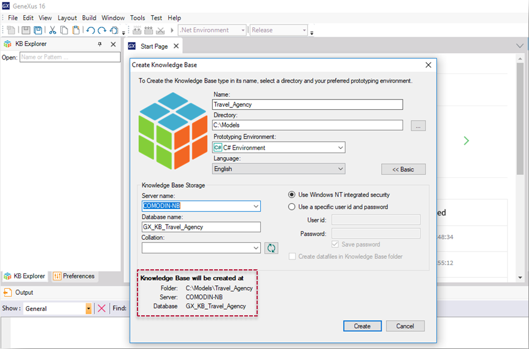

You can create a new Knowledge Base by selecting: File > New > Knowledge Base in the GeneXus menu bar or by pressing Ctrl+Shift+N.
The GeneXus Start Page also gives the option to create a new Knowledge Base.
When you create a new Knowledge Base, a dialog box will be displayed to complete some details, as shown in the image below:

Here you have to complete the required data:
Look at the information in the dotted red rectangle, which tells you the directory where the KB will be created. More specifically, the last two lines contain details on the database that will store the information related to the Knowledge Base. Remember that this is not the database corresponding to our application but another one that will store the information relative to definitions you will include in your Knowledge Base.
Once the information required has been completed, you only have to press the Create button.
Use alphanumeric characters (a-zA-Z0-9) to name a KB taking into account that it cannot begin with numbers. The character "-" is not supported, use "_" instead.
Team Development with GeneXus Server
The advanced Create Knowledge Base dialog box